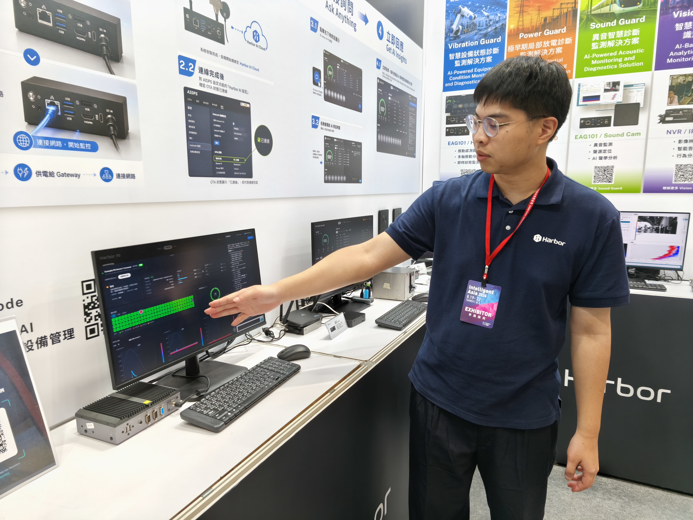

我從客戶資料分析與交付進入工業場景，主導 Harbor AI 2.0 的產品與領域邏輯：使用者先看什麼、何時需要深入資料、模型結果如何呈現，以及分析如何接上報告與排程。我也參與排程、跨服務工作流與資料整合，將功能串入版本交付；各服務依工程夥伴與 AI agents 的實際分工完成。

報告服務、DOCX 報表與前端下載已整合進主線；我也參與排程、跨服務工作流及資料整合，持續推進監控產品的版本交付。
架構、整合與責任分工
從模糊需求拆成使用者流程
把即時概況、設備資料查詢、長時間窗分析與正式報告分開。耗時的分析透過非同步任務與排程處理，保留執行狀態、歷史結果與缺資料情境。
以時間範圍決定計算方式
即時概況回答「現在需要處理什麼」，長時間窗分析則回答「狀態如何變化」。耗時分析不綁在開頁即時計算：操作入口顯示目前摘要，任務另外執行，歷史分析與正式報告保存為可回查的結果。這讓查詢與分析各有完成條件；任務狀態與缺資料情境也必須在介面中說清楚。
重資料與輕資訊分流
基本狀態與趨勢不應每次都等待原始波形上傳：架構採輕量特徵持續供應、需要深入診斷時再取原始證據的方向。重上傳採非同步接受，讓請求與背景處理分開；代價是必須管理佇列積壓、進度與對帳，接受任務不等於完成分析。
通知不能變成第二個指令來源
指令與確認以平台持久狀態及 HTTP 路徑為準，MQTT 只作喚醒通知；通知失落時仍由定期 heartbeat 取得指令。完整狀態更新可取代舊狀態，獨立的原始波形請求則不能互相覆蓋。我參與這些領域語意與契約判斷，並以任務狀態、資料缺漏及通知失落等條件檢查整合；各服務的實作依團隊分工，完整運行範圍需依版本另驗。
從領域語意接到系統
釐清感測器狀態、資料品質、剩餘壽命（RUL） 與異常的意思，再對齊後端契約、操作介面及驗證條件。我的工作也涵蓋排程、資料與服務整合，以及版本交付的驗證與協調。
共同完成產品
主管提供初始方向，設計師參與主儀表板；我主導後續產品／領域架構、多條功能整合與驗證條件。工程夥伴負責各自服務與基礎設施，AI agents 參與實作、測試及紀錄；我回查整合結果是否符合需求，reviewer 保留變更審查與發布決策。
讓多項開發與修復持續推進
先建立可追溯的專案紀錄
功能需求、待決事項與 issue 不能只散落在對話裡。我建立紀錄架構，將問題、決策、負責人、分支、測試結果與交付狀態互相連結；AI agents 接手時能找到持久上下文，審查時也能回查為何修改、實際測到什麼，以及哪些項目仍待處理。這套環境同時支援新功能開發與日常維護。
每日回歸，修復與驗證並行
開發機每日執行所有功能的回歸測試與監控，結果與異常留下紀錄並建立 issue。AI agents 在隔離分支研究、實作及測試，多項修復與驗證可並行推進，再將 PR 送交人工審查。我負責協調工作、檢查領域與產品判斷，以及確認驗證能回答原問題。每日所有功能回歸與並行方式為本人確認的工作流程，尚無完整測試覆蓋率、自動修復成功率或效率倍數的量測。
缺少驗證，就不能結案
執行 agent 回報結果後，驗證者回查原始測試與紀錄，不照抄成功摘要；沒有驗證的 issue 不轉為已解決。失敗或被發布條件阻擋的分支保留紀錄與待審狀態，不因排程繼續執行而變成通過。我負責證據是否回答原問題的裁決，並把發現的缺口更新到規範。
曾在逐張核實 issue 時，撤回被誤認為已修復的項目，並補強結案規則。個別修復是這套流程的執行證據；流程的價值在於持續保留問題、判斷與驗證，讓後續工作能接續。PR、合併與正式發布各有獨立決策點。
RUL 模型假設審查
在剩餘壽命研究中，我追查 AI 分析引用的資料，發現測試常數被誤認為真實資料。作廢錯誤結論後，要求實驗直接呼叫實際程式，以消融比較釐清參數影響。
快速劣化不能漏報；健康序列也不能因修正而產生不穩定警示。
這個案例呈現假設審查與品質控制方法；現場壽命真值與信心校準仍需另外驗證。